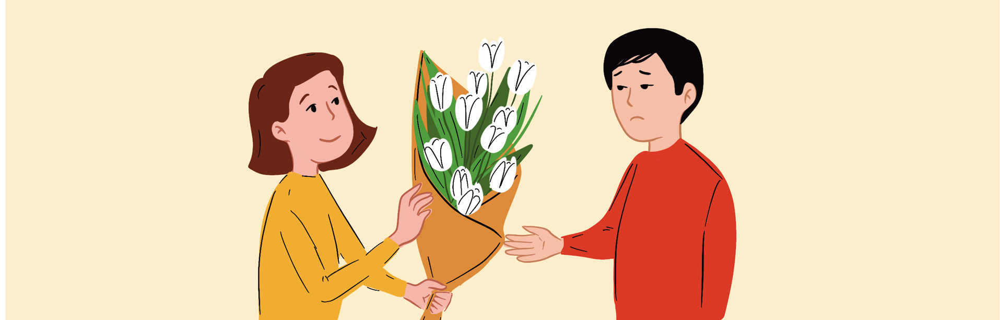

Mirëkuptimi, solidariteti, empatia dhe respekti ndaj të tjerëve
Respektojmë diversitetin kulturor
Situata 2.
Ngjyrat e çdo luleje ndryshojnë kuptimin nga një kulturë në tjetrën. E verdha përfaqëson diellin, jetën e gëzimin. Në Japoni, ngjyra e verdhë tregon trimërinë dhe kurajën. Në Egjipt, kjo ngjyrë është simbol i zisë.
E bardha në Perëndim është simbol i pastërtisë. Në Lindje është simbol i zisë dhe i mërzisë. Në Kinë e Japoni, ngjyra e bardhë ta kujton dhimbjen dhe trishtimin. E kuqja në Kinë është simbol i fatit të mirë, ndërsa në Perëndim simbolizon rrezikun.
Tulipanët kanë domethënie pozitive në të gjitha kulturat. Ata tregojnë rilindje, gëzim.
Shoku ynë i klasës, Luja, kishte ditëlindjen. Ai jeton me familjen e tij, e cila ka një biznes familjar në Prishtinë. Vendosëm që ta uronim me një buqetë lulesh. Në vend që ta gëzonte, dhurata e shqetësoi Lunë
